<<ポエム・裏話>>
| 鉱山PK 心の詩 「誕生」 私は鉱山PK。 嫌われ者。 嫌われたくて なったんじゃない。 昔は私も堀師だったんだ。 いつも一人で ざっくざっく。 溶かすの失敗して またやり直し。 ざっくざっく。 いつも一人で ざっくざっく。 するとお隣にも堀師さん。 隣の堀師さんも一人で ざっくざっく。 寂しかったので 話かけようと思った。 でも、どんな人だろう。 怖い人じゃなければいいなあ。 そうだ。 堀師さんのPDを見よう。 コミュニケーション前の礼儀だと思ってた。 だから堀師さんをダブルクリック。 すると頭の上にメッセージ you are attacking Horishi ! 話かけようと思った堀師さんはリコールアウト。 あーあ。失敗しちゃった。 次の日、その堀師さんとその人の友達に会ったんだ。 そして堀師さんは、その人の友達にこう言ったんだ。 「あいつ、鉱山PKｗｗ。うぜえｗｗ。」 私は何故かEXを詠唱してたんだ。 我に帰った時は殺人者として報告されてたんだ。 違う。 そんなつもりじゃなかったんだ。 「ごめんなさい。」 蘇生の魔法を唱えて二人を生き返らせた。 生き返った二人は口を揃えてこう言った。 「堀師殺して楽しいの？？まじ暗いなｗｗｗ」 私は何故かLTを詠唱してた。 我に返った時は殺人者として報告されてたんだ。 違う。 そんなつもりじゃなかったんだ。 でも私の名前は もう言い訳出来ない 赤い色。 泣きながら 堀師さん達のカバンを漁ってた。 「決意」 私はこの世界を少し理解した。 時間が経てば 青い名前に戻れると知ったんだ。 お気に入りの荷ラマのラマタンと二人で 掘って掘って掘りまくる。 たまに掘師さんが来るけど私の名前を見て リコールアウト。 大丈夫。 名前が青くなれば、みんな一緒。 気にしない。気にしない。 でも、その堀師さんが ドラゴンを連れたテイマーさんと 戻ってきた。 テイマーさんは言ったんだ。 「all kill」 私は死んだ。 ラマタンも死んだ。 私は必死にそのテイマーさんに ラマタンの蘇生をお願いしたんだ。 テイマーさんは言ったんだ。 「なんで俺が赤のペット蘇生しなきゃいけないの？？？」 そうですよね。 私はラマタンの幽霊が消えるまで見守った。 さようなら。ラマタン。 私は決意したんだ。 もう、一人で生きていくって。 Fin. 「あとがき」 私とは何の関係もない話です。 私、鉱山PK楽しいだけですしｗｗｗｗｗ |
正直、「やっちゃったー」感はありますが気にしません。
もちろん、お買い上げ頂いた方のみの特典もつけました。
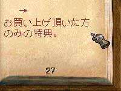
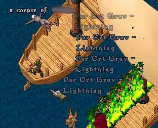
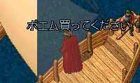
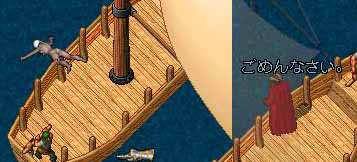
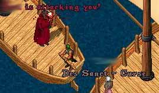
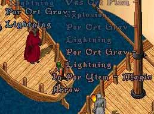
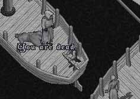
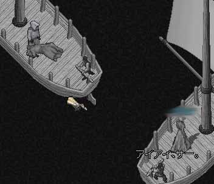
立ち去られました。
蘇生に時間がかかりました。
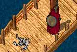
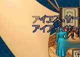
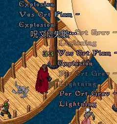
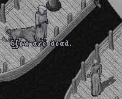
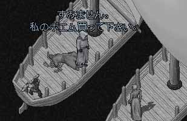
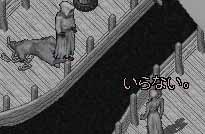
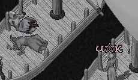
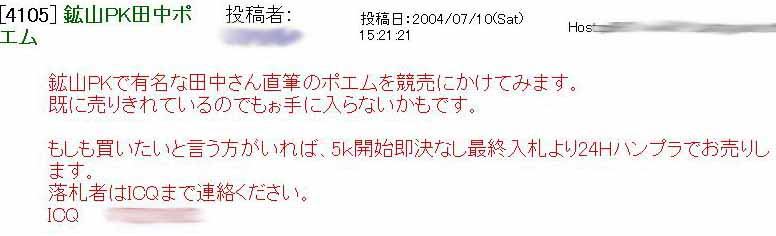
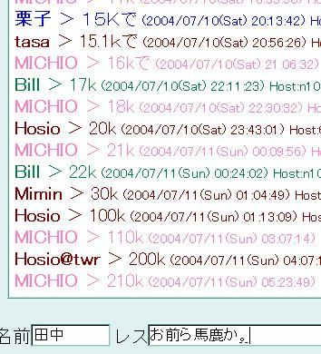